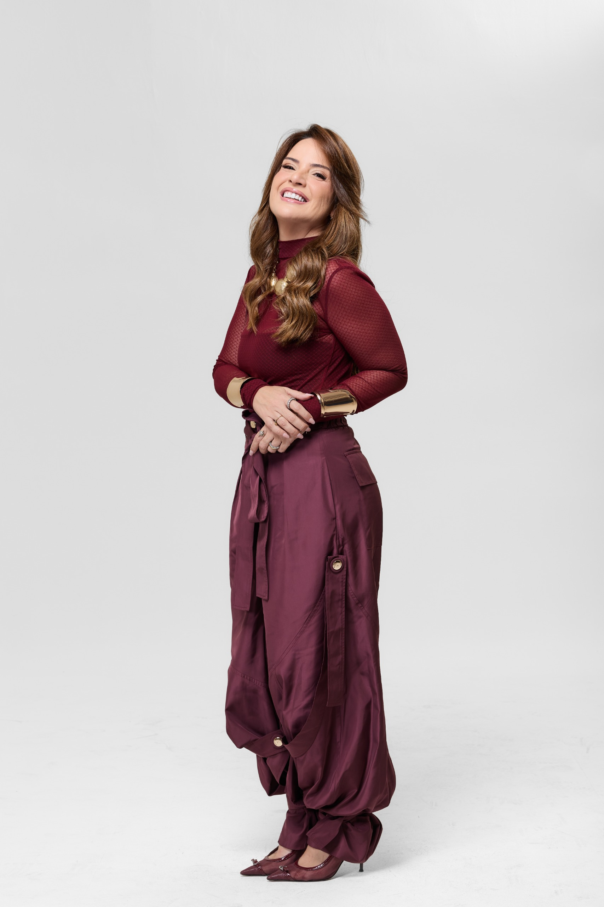
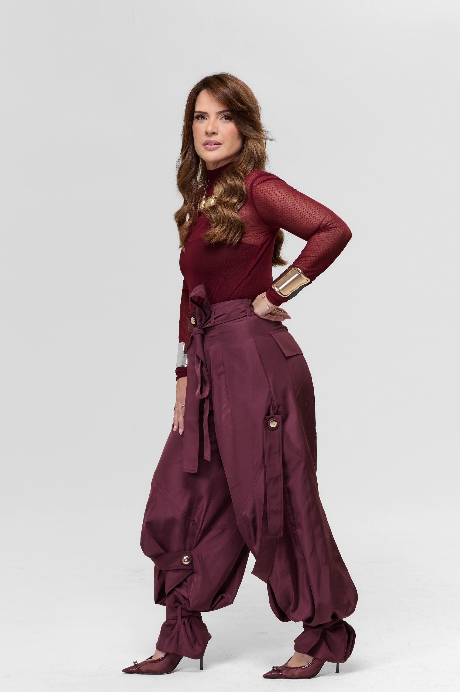

Arquitetura
Tudo começa pela forma como o espaço pode funcionar melhor.
Implantação, proporções, circulação, luz, integração e relação com o entorno são pensadas em conjunto para chegar a uma arquitetura que seja tão bem resolvida quanto bonita.
ARQUITETURA · INTERIORES
Arquitetura e interiores desenvolvidos por inteiro, com decisões precisas, soluções personalizadas e acompanhamento atento em cada etapa.
CONTE SOBRE SEU PROJETONOSSA ESSÊNCIA
Uma proporção que funciona melhor. A entrada de luz no ponto certo. Um material que muda a leitura do ambiente. Um encontro bem resolvido entre arquitetura, marcenaria e mobiliário. É nessa soma de decisões — muitas delas quase imperceptíveis isoladamente — que um projeto ganha força.
No escritório Lediane Barbosa Arquitetura e Interiores, cada trabalho é desenvolvido com esse nível de atenção: do conceito às especificações, da composição dos ambientes ao acompanhamento da execução. Porque um bom resultado não nasce de uma grande ideia apenas. Nasce de muitas boas decisões trabalhando juntas.
Tudo começa pela forma como o espaço pode funcionar melhor.
Implantação, proporções, circulação, luz, integração e relação com o entorno são pensadas em conjunto para chegar a uma arquitetura que seja tão bem resolvida quanto bonita.
É quando o projeto ganha matéria, textura e atmosfera.
Revestimentos, iluminação, marcenaria, mobiliário e objetos são escolhidos como partes de uma mesma composição — sem excessos, sem soluções soltas, sem nada fora de lugar.
Porque entre desenhar bem e entregar bem existe uma obra inteira.
O acompanhamento preserva decisões, orienta ajustes e mantém a coerência do projeto até que aquilo que foi pensado finalmente tome forma.
NOSSOS PROJETOS
Na arquitetura, na luz, nos materiais, nos interiores e na forma como tudo se encontra. Conheça alguns de nossos projetos.
O QUE FAZEMOS
Da arquitetura ao último detalhe dos interiores, com soluções que dão unidade, precisão e qualidade ao resultado.
Uma boa casa começa muito antes da forma.
Implantação, volumetria, circulação, incidência de luz, integração dos ambientes e relação com o entorno são trabalhadas como partes de uma mesma decisão. Desenvolvemos projetos residenciais completos, buscando soluções que aproveitem melhor cada espaço e construam uma arquitetura consistente do primeiro estudo à definição final.
É nos interiores que muitas das decisões mais sutis começam a aparecer.
Materiais, iluminação, marcenaria, mobiliário, texturas e proporções são pensados em conjunto para criar ambientes com unidade e presença. Cada elemento entra no projeto por uma razão — e é essa precisão na composição que faz o espaço funcionar como um todo.
Um projeto bem pensado precisa ser igualmente bem definido.
Detalhamos soluções, materiais, acabamentos, marcenaria, iluminação e demais elementos necessários para que cada decisão possa ser compreendida e executada com precisão. É nessa etapa que a intenção do projeto se transforma em informação clara para a obra.
Entre o desenho e o resultado final, decisões continuam acontecendo.
O acompanhamento de obra permite orientar ajustes, esclarecer soluções e preservar a coerência do projeto ao longo da execução. Uma presença técnica que ajuda a fazer com que aquilo que foi pensado chegue ao espaço construído com a mesma qualidade.

LEDIANE BARBOSA
Lediane Barbosa construiu sua trajetória a partir de um olhar atento para aquilo que faz um projeto ganhar força: proporção, luz, materiais, composição e coerência entre todas as decisões.
Formada pela UNIP Manaus e à frente do escritório Lediane Barbosa Arquitetura e Interiores, soma mais de 500 projetos realizados ao longo de mais de duas décadas de atuação, com forte presença na arquitetura residencial e no design de interiores.
Seu trabalho é marcado pela valorização da luz natural, pelo uso criterioso de materiais nobres, pela presença da biofilia e por uma atenção minuciosa aos detalhes. Não como recursos isolados, mas como partes de uma arquitetura pensada por inteiro, do conceito à execução.
Ao longo da carreira, participou de importantes mostras, como CASACOR Amazonas e Artefacto, além de ter recebido reconhecimentos e premiações no segmento, consolidando sua presença na arquitetura de alto padrão.
Seu repertório também se constrói fora do escritório. Lediane já visitou 26 países, reunindo referências de diferentes culturas, paisagens, materiais e formas de viver. França, Itália, Indonésia, África do Sul, Reino Unido e Suíça estão entre os destinos que ampliaram seu olhar e seguem alimentando seu processo criativo.
Mãe de três filhos e casada com Christiaan, também seu sócio, Lediane leva para o trabalho uma compreensão muito próxima do que uma casa representa no dia a dia. Talvez por isso seus projetos consigam equilibrar tão bem sofisticação, funcionalidade e aquela sensação rara de que tudo está exatamente onde deveria estar.
Conheça nosso olhar no InstagramNOSSO MÉTODO
Um processo claro, próximo e atento para que cada decisão tenha propósito.
Entendemos o espaço, as necessidades e o jeito de viver de cada cliente.
Definimos a direção criativa que orientará todas as escolhas do projeto.
Transformamos o conceito em soluções de arquitetura e interiores.
Materiais, medidas e especificações são organizados para a execução.
Acompanhamos o processo para aproximar o resultado de tudo que foi projetado.

A obra também tem sua beleza.
ENTRE EM CONTATO
Conte um pouco sobre o que você imagina. A partir daí, marcamos um encontro para entender o projeto e os próximos passos.
FALAR PELO WHATSAPP